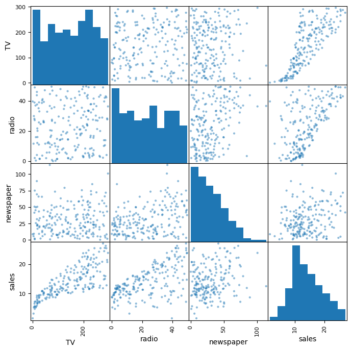
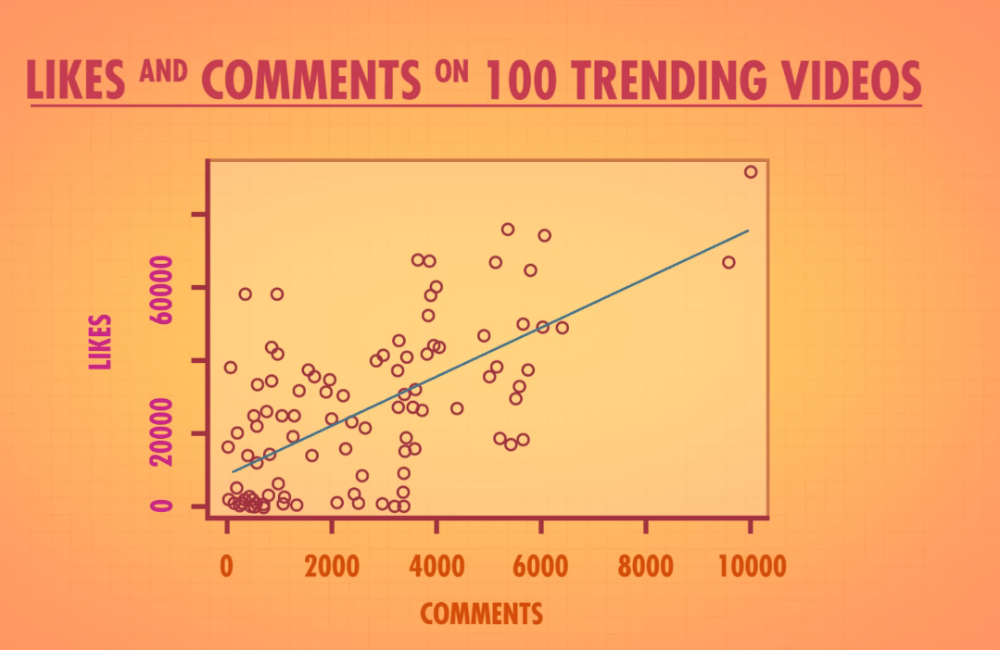
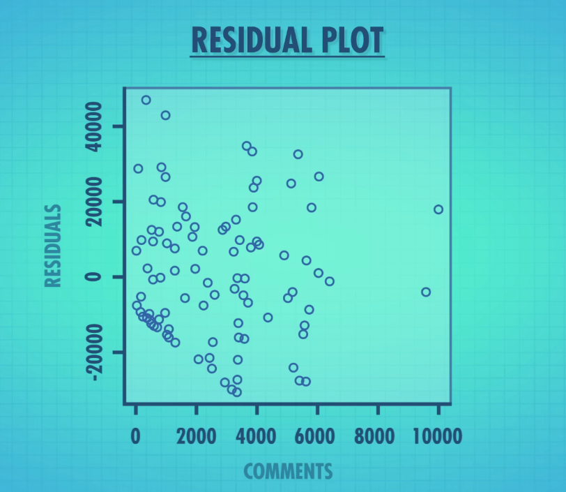
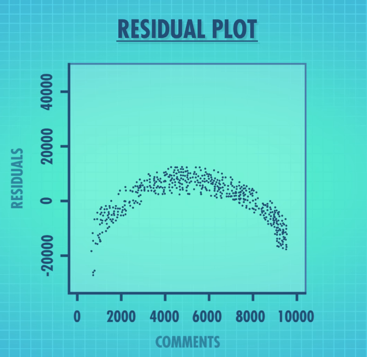

DATA 201 Week 9: Quantitative Analysis
Bonnie Wu
Today’s Outline
- Correlation and Regression review
- Announcements
- Quick Poll
- Work time
Correlation and Regression Review
Advertising dataset- TV: advertising dollars spent on TV for a single product in a given market (in thousands of dollars)
- Radio: advertising dollars spent on Radio
- Newspaper: advertising dollars spent on Newspaper
- Sales: sales of a single product in a given market (in thousands of units)
Why use scatterplot matrices
- Quick glance at correlation, trends, and outliers


How to create it in
- PowerBI
- Tableau
Example

Histograms: Distribution
- Histograms show the distribution on the diagonal
- Distribution: frequency of values in a dataset
- Normal/Symmetric? Many values near the centre
- Uniform? The frequency of values are about the same, looks boxy
- Right/Left skewed? Values are mostly low or high
- Bimodal? (two peaks) There could be two unique distributions
Histograms: Skewness
- Skewness
- Positive Skew: mean > median
- Negative Skew: mean < median
- No skew: mean = median = mode
Correlation Coefficient
- All the data points get represented as a single value
- Pearson’s r measures the strength and direction of a linear relationship
- Ranges from -1 to +1
- +1: perfect positive (as X goes up, Y goes up)
- 0: no linear relationship
- -1: perfect negative (as X goes up, Y goes down)
- Rough guide: |r| < 0.3 weak, 0.3 to 0.7 moderate, > 0.7 strong
- Let’s do it in Excel!
Correlation Matrix: Advertising Data
| TV | Radio | Newspaper | Sales | |
|---|---|---|---|---|
| TV | 1.00 | 0.05 | 0.06 | 0.78 |
| Radio | 0.05 | 1.00 | 0.35 | 0.58 |
| Newspaper | 0.06 | 0.35 | 1.00 | 0.23 |
| Sales | 0.78 | 0.58 | 0.23 | 1.00 |
- TV has the strongest relationship with Sales
- Newspaper has only a weak relationship with Sales
- Radio and Newspaper are moderately correlated with each other
Heatmap for Correlation
- A heatmap turns the matrix into colour so patterns pop out
- In Excel: select the matrix → Home → Conditional Formatting → Color Scales
- Dark = strong, light = weak
- Look for:
- Strong correlations with the target (Sales)
- Strong correlations between predictors (multicollinearity)
- PowerBI
From Correlation to Regression
- Correlation: how strongly are two variables related?
- Regression: what is the relationship, and can we predict with it?
- Simple linear regression:
\[\hat{y} = \beta_0 + \beta_1 x\]
- \(\beta_0\) is the intercept: predicted Sales when spend is 0
- \(\beta_1\) is the slope: change in Sales for each additional unit of spend
- The “best” line minimizes the sum of squared residuals (least squares)
Which Line Is “Best”?
- Many lines could be drawn through the data
- Each point misses the line by some amount: its residual
- Square the misses and add them up to score a line
- Squaring stops over- and under-predictions from cancelling out
- The least squares line has the smallest total score
Regression Chart

Residuals: What the Line Gets Wrong
- Residual = actual value − predicted value
\[e_i = y_i - \hat{y}_i\]
- Positive residual: the line under-predicted
- Negative residual: the line over-predicted
- Least squares picks the line that makes this as small as possible:
Residual Plots

Residual Plots

Regression Statistics in Excel
- The Output Has Three Sections
- Regression Statistics
- How well does the model fit?
- ANOVA
- I’m going to skip this
- Coefficients
- What does each variable do, and can we trust it?
Multiple R
- Multiple R = 0.947212034
- How strongly the predictors, taken together, relate to Sales
- If only one predictor, it’s the same as the correlation coefficient
- Closer to 1 means a stronger relationship
R Square (R²)
- R Square = 0.897210638
- Proportion of variance in response variable (Sales) using the predictor variables (TV, Radio, Newspaper)
- Value of 1 => variability in response can be explained by predictors
- Value of 0 => variability in response cannot be explained by predictors
Standard Error
- Standard Error = 1.685510373
- The typical size of a prediction miss, in the units of Sales
- Smaller is better
Section 3: Coefficients
| Coefficients | Standard Error | t Stat | P-value | Lower 95% | Upper 95% | |
|---|---|---|---|---|---|---|
| Intercept | 2.939 | 0.312 | 9.42 | < 0.001 | 2.324 | 3.554 |
| TV | 0.0458 | 0.0014 | 32.81 | < 0.001 | 0.0430 | 0.0485 |
| Radio | 0.1885 | 0.0086 | 21.89 | < 0.001 | 0.1715 | 0.2055 |
| Newspaper | -0.0010 | 0.0059 | -0.18 | 0.860 | -0.0126 | 0.0105 |
Coefficients: The Effect
- Intercept = 2.939
- Predicted Sales when $0 is spent on all three media of advertising (about 2,900 units)
- TV = 0.0458
- For each extra $1,000 spent on TV ads, we predict that about 46 more units sold
- Radio = 0.1885
- Each each extra $1,000 spent on radio ads, we predict that about 189 more units sold
- These values are if other variables are constant
- This doesn’t mean that radio is better than TV
Coefficients: Newspaper
- Newspaper = -0.0010
- Essentially zero, and slightly negative
- Each extra $1,000 on newspaper goes with about 1 fewer unit
- Too small to matter
- The sign shows direction and the size shows strength
Coefficients: Can We Trust It?
- Standard Error: how much the estimate would wobble with different data
- Small relative to the coefficient means a precise estimate
- t Stat: the coefficient measured in standard errors
- Rule of thumb: |t| > 2 is significant
- TV: 32.8, Radio: 21.9, Newspaper: -0.18
P-Value
- indicates how likely a statistical result occured by chance
- small p value:
- statistically significant, unlikely to be chance alone
- accept alternative hypothesis
- Alternative hypothesis: theory you are trying to prove
- high p value:
- statistically non-significant, likely to be chance
- failed to reject null-hypothesis
- Null hypothesis: theory you are trying to disprove
- p-values range from: 0 - 0.1
Coefficients: Confidence Interval
- Lower / Upper 95%: the range of plausible values for the true effect
- TV: 0.043 to 0.049
- Each $1,000 adds between 43 and 49 units
- Radio: 0.172 to 0.206
- Each $1,000 adds between 172 and 206 units
- Newspaper: -0.013 to 0.011
- The range includes 0, so we can’t rule out no effect
Key Takeaways
- Scatterplot matrices give a quick visual of trends, distributions, and outliers
- Correlation (r) summarizes the strength and direction of a linear relationship
- Heatmaps make a correlation matrix easy to scan
- Regression quantifies the relationship and enables prediction
Questions?
Announcements
- Assignment 8: Group focused
- Quick Poll re Wednesday:
- livepoll.io/join
- Code: B694NW
- Code: B694NW